Welcome to my professional practice portfolio. Here you can find my Week 01 exercises.
I analyzed two websites to see how they create a good impression through design and typography:
1. Qodeca: This site uses a clean layout with bright yellow highlights to draw attention to key text. The clear navigation and prominent "Let's talk" button make it look professional and easy to use.
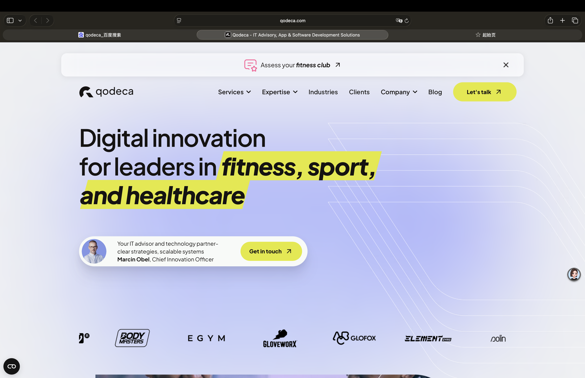
2. /nk.studio: This site uses bold colors and creative animations. It leaves a strong impression by feeling modern and highly creative.
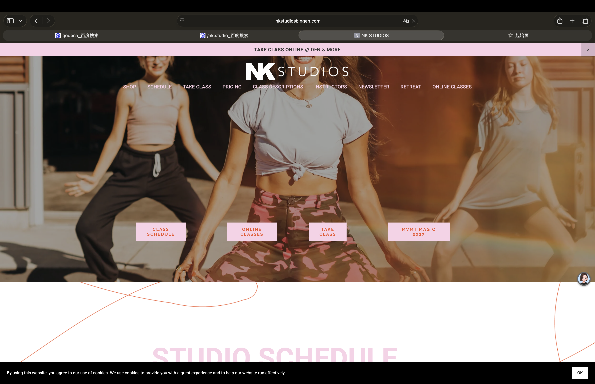
My 143-character response: Why do I want to be a graphic designer?
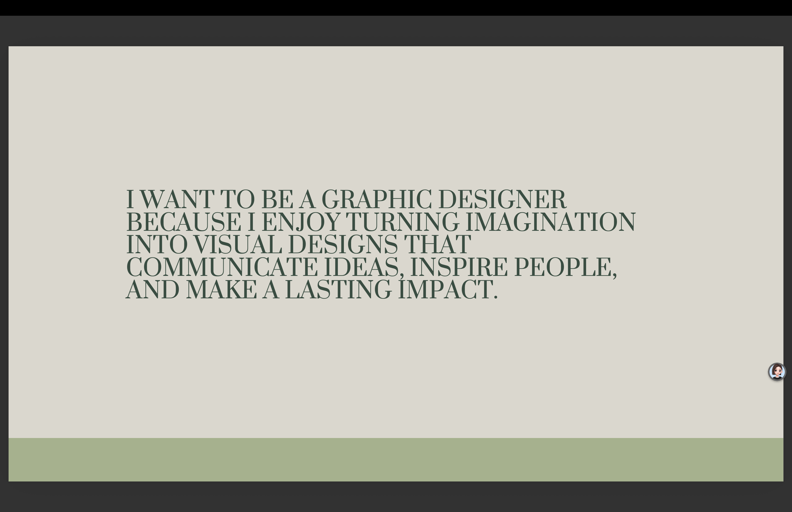
Homepage Draft: My initial sketch and layout idea for my portfolio website.
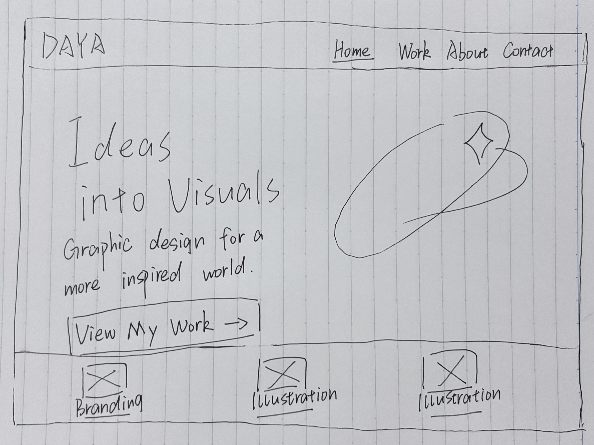
Through this exercise, I learned that creating a good impression relies heavily on clear typography, visual hierarchy, and how well the design communicates the core message to the user.
My Skill Set & Pricing List:
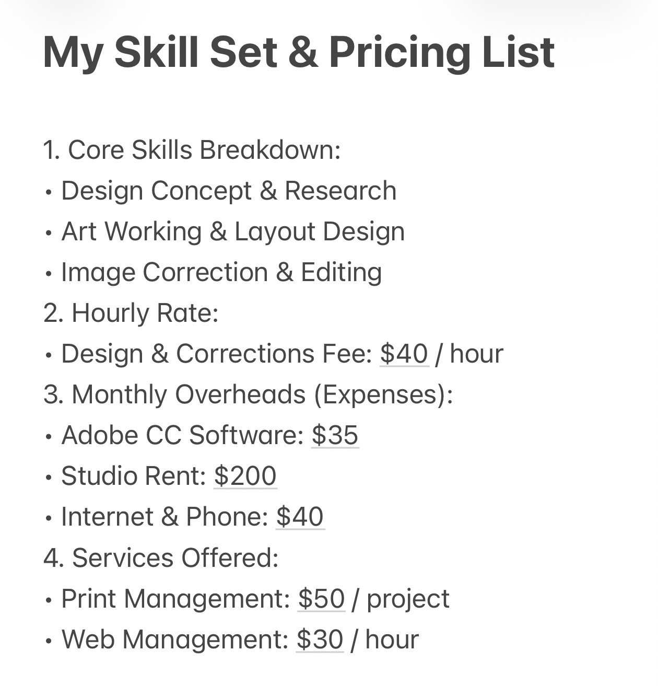
Commercial Invoice Design: Based on my pricing list, this is a professional invoice designed for a client.
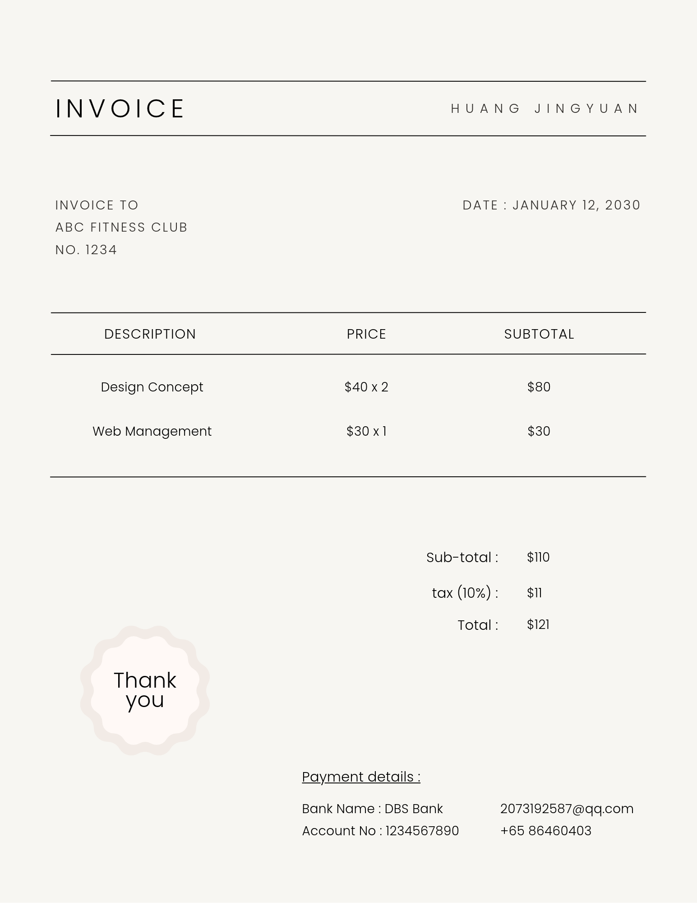
My personal statements reflecting my design ethics:
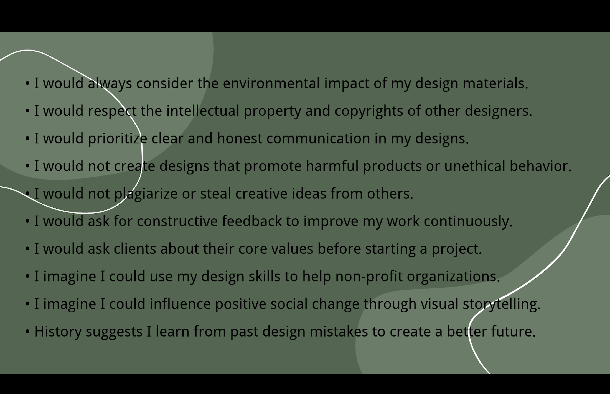
This exercise made me realize that being a designer is not just about making things look good; it's about taking responsibility for the impact our work has on society.
Analyzing the three ethical scenarios:
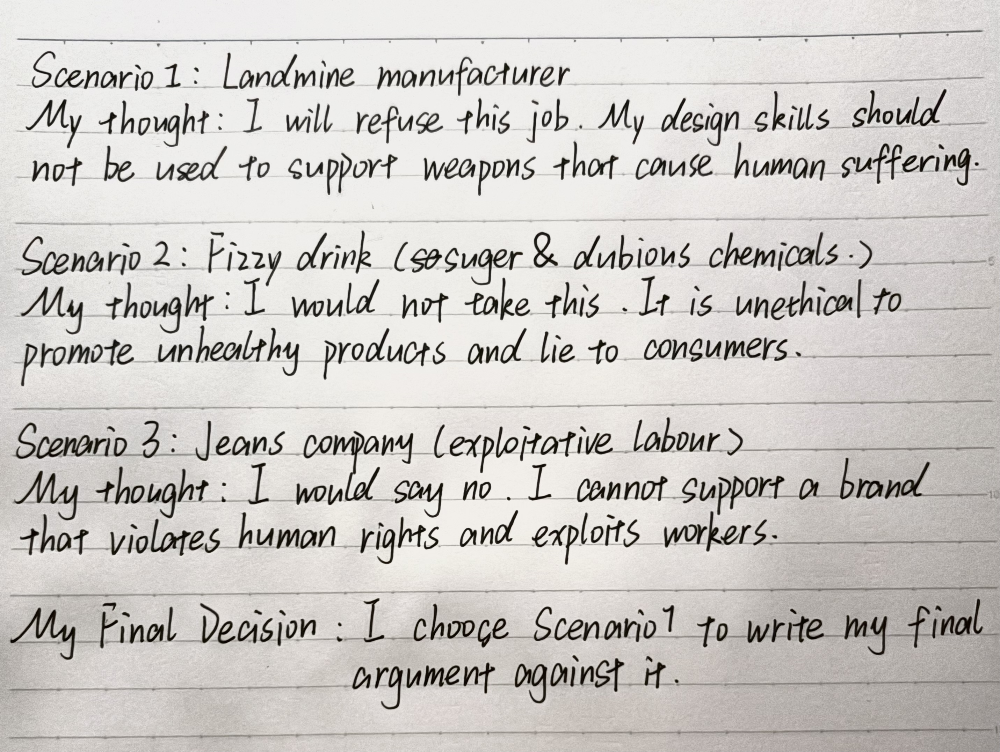
My reasoning for rejecting an unethical job (Scenario 1):
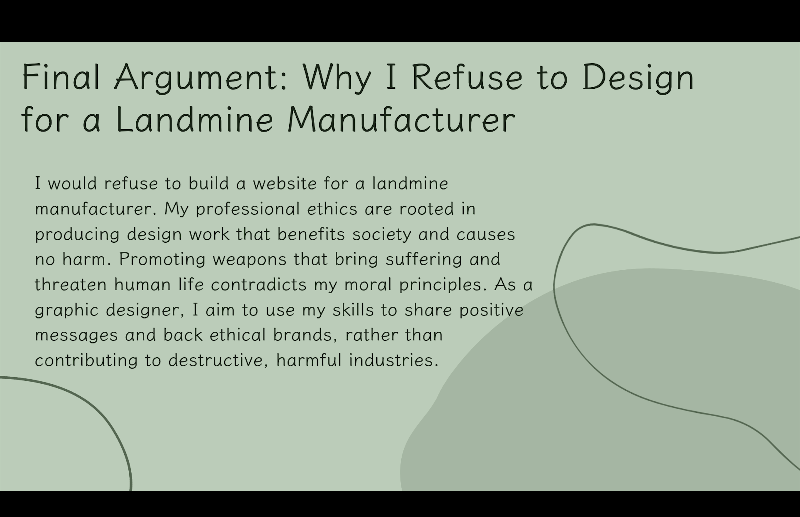
Understanding my boundaries as a designer is crucial. It's okay to decline a project if it conflicts with my personal values.
My roadmap to becoming a Studio Founder over the next decade:
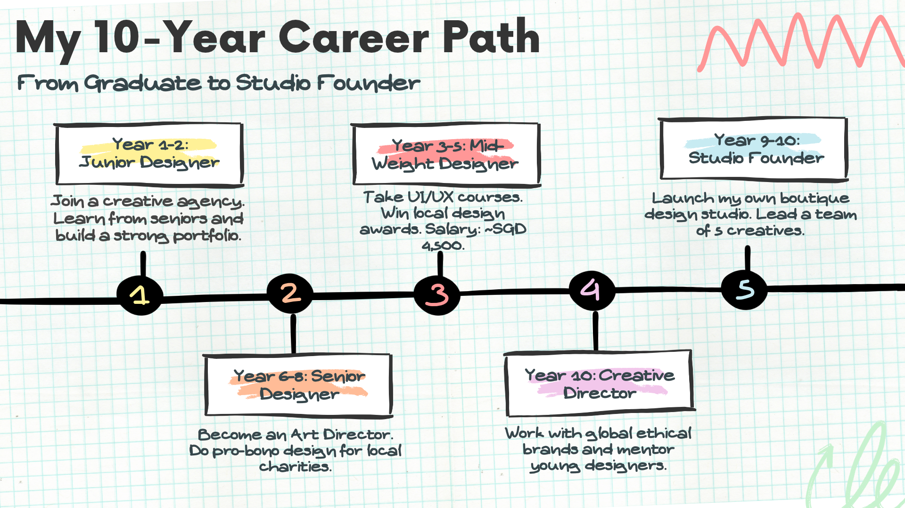
Self-evaluation on my current strengths and future goals:
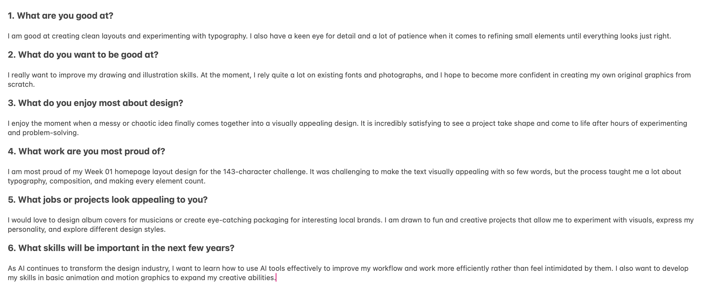
Drafting my professional introduction script:
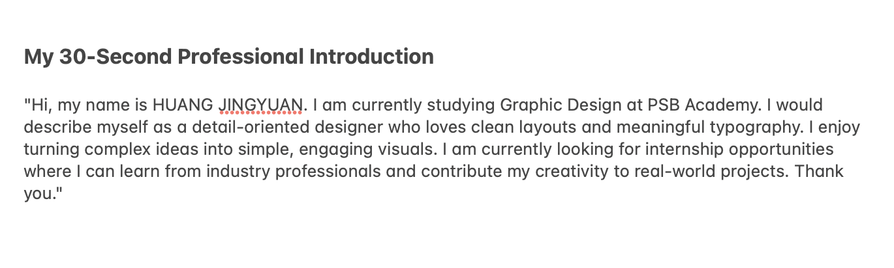
Visual presentation of my professional identity:
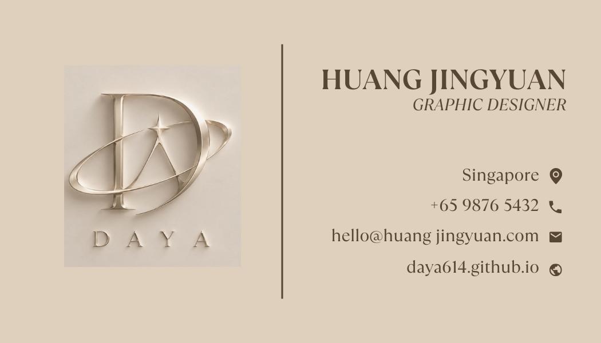
How I solved the strict design constraints (A5, 2 colors, Arial only, no images):
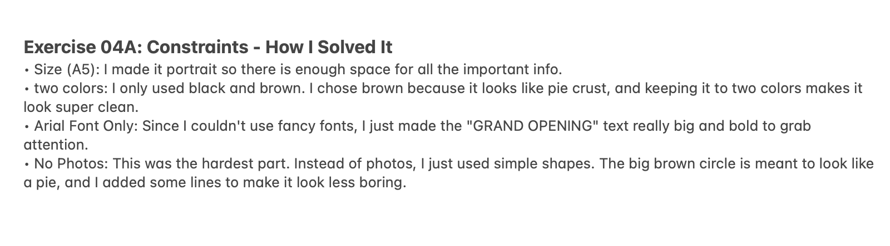
My final flyer design for "The Pie Room Cafe":
< img src="week4_04a_flyer.png">Click the button below to view the live Canva design:
View Canva f1yer DesignA reverse-engineered workflow diagram showing the stages of creating a pie:
< img src="week4_04b_workflow.png">Understanding constraints forces me to be more creative. Working backwards helps me understand the full life cycle of a design project.